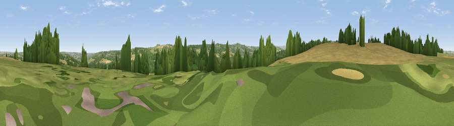

Viewpoint near Rowlands Gill
#27370 in England · top 60% of its area beats it · near Rowlands GillThe view, rendered

A 360° render of this exact spot computed from the terrain model, tree cover and land cover — summer colours, afternoon light, calibrated against photographs of famous viewpoints. Real trees, hedges and buildings will differ in detail.
The panorama
Grey silhouette: terrain skyline in each direction (720 bearings, Earth curvature and refraction included). Dashed green: skyline with trees (+15 m) and buildings (+8 m) as obstacles. Blue strip: how far the ground is visible on each bearing.
Where the view opens
Wedge length = distance to the farthest visible ground on that bearing (vegetation-aware). Rings at 10, 25 and 50 km.
What fills the view
37% woodland · 28% grassland · 26% cropland · 9% built-up
Angular shares of the visible panorama (visual magnitude), not map area. Landscape diversity 0.56 (0–1 Shannon).
Key numbers
More beautiful places nearby
The staircase of upgrades: each row has a higher view potential than everything closer. Driving times are estimates from straight-line distance, calibrated against real road routing — check an actual route before setting out.
| Place | Direction | Drive | Score |
|---|---|---|---|
| Viewpoint near High Spen | W · 1 km | ~2 min | 51.8 |
| Viewpoint near Burnopfield | SE · 3 km | ~7 min | 56.2 |
| Viewpoint near Burnopfield | SE · 4 km | ~9 min | 75.4 |
| Viewpoint near Sunniside | ESE · 7 km | ~14 min | 77.6 |
| Pontop Pike | S · 7 km | ~15 min | 77.8 |
| Viewpoint near Rothbury | NNW · 40 km | ~59 min | 81.1 |
| Dove Crag | NNW · 40 km | ~60 min | 82.3 |
| Viewpoint near Glanton | N · 56 km | ~78 min | 82.9 |
54.93644, -1.75142 · source: screening · position refined by local search. Computed location — check access rights before visiting.